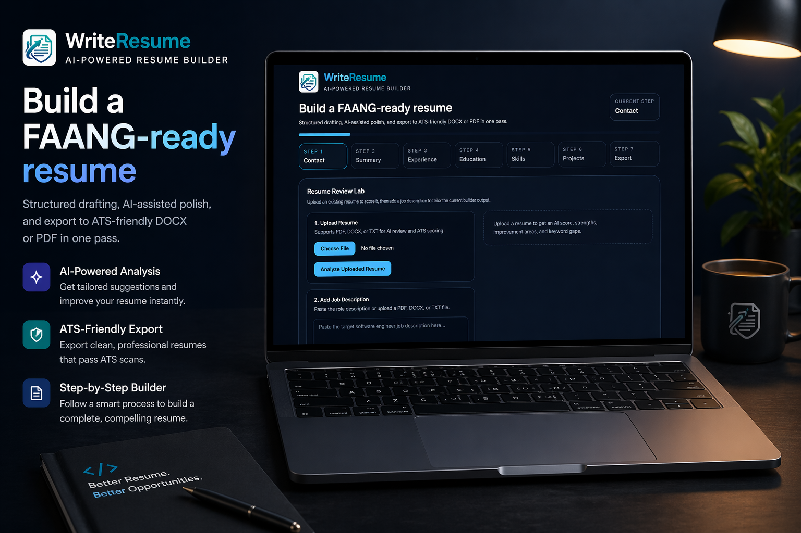
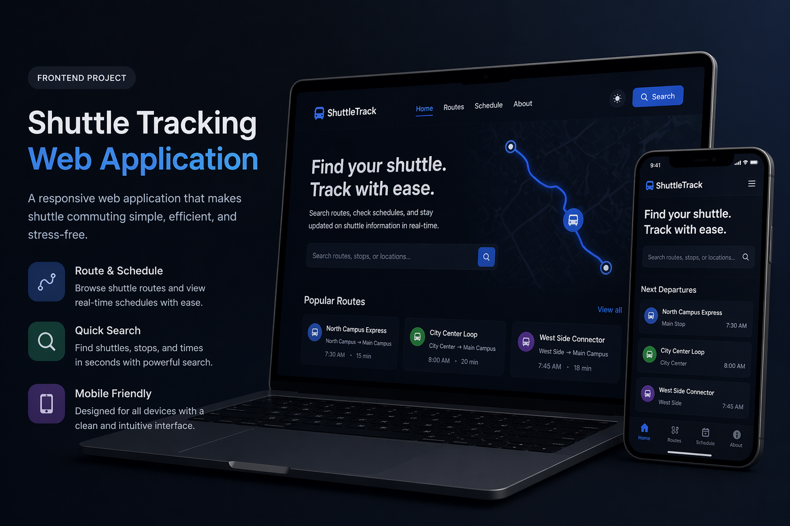
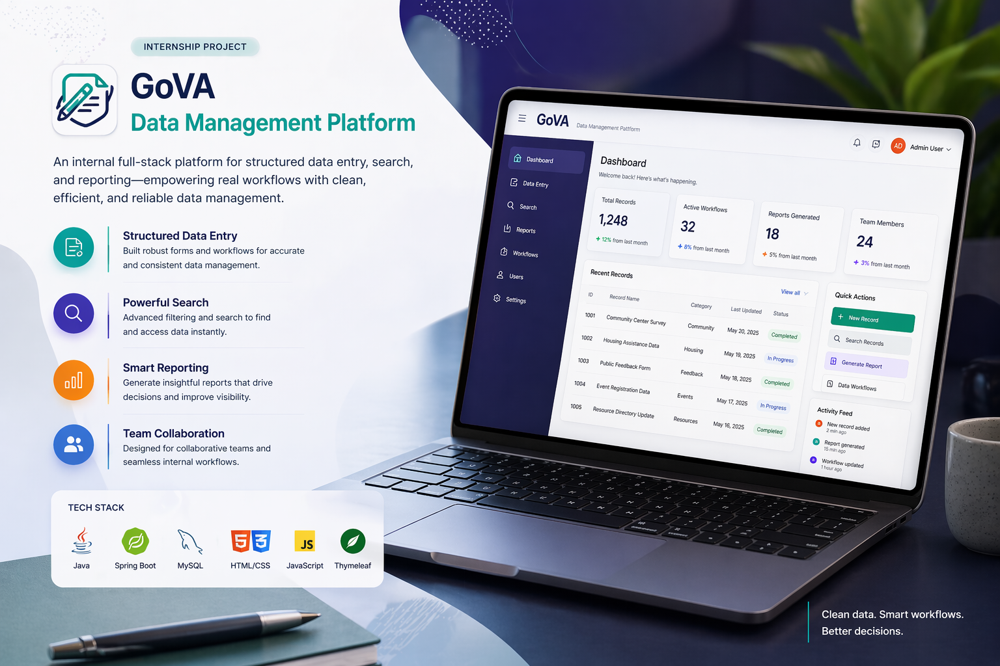

Lower latency on production financial workflows.
About
Engineering products that balance scale, clarity, and measurable impact.
Full Stack Software Engineer with 1.5+ years of experience building financial platforms and internal tools with Java, Spring Boot, Node.js, React, TypeScript, AWS, Docker, Kubernetes, and event-driven systems.
I enjoy the overlap between systems thinking and product thinking. That usually means building APIs and backend services that stay dependable under load, then carrying the same care into frontend workflows so the user experience still feels sharp.
My recent work spans trading and reporting systems, internal data platforms, and end-to-end product builds where architecture, delivery speed, and usability all matter at the same time.
Cloud-native delivery
Microservices
Event-driven systems
Performance optimization
Product-minded UI

Based in the U.S.
Full-stack engineer with backend depth and frontend taste.
I like building systems that perform well under pressure and still feel clean and intuitive to the people using them.
Profile snapshot
Available for SWE roles- SchoolMarymount University
- GraduationMay 2026
- Target rolesFull-Stack / Software Engineer
- Emailshushil2060@gmail.com
- Phone(571) 457-2118
Experience
Hands-on work across production-grade systems, internal platforms, and product delivery.
A timeline of engineering roles where performance, collaboration, and platform reliability mattered.
Financial platforms
Sep 2025 - Present · Charlotte, NC
Software Engineer at State Street
45% lower query latency
30% more throughput
60% faster deployments
- Build backend services and financial platform features using Java, Spring Boot, Node.js, and TypeScript.
- Develop React and TypeScript workflows across trading, reporting, and internal operations.
- Support scalable event-driven architecture using Kafka and RabbitMQ.
- Deploy and maintain cloud-native systems on AWS with Docker, Kubernetes, Terraform, and CI/CD automation.
Data management
Jan 2026 - Present
Software Engineer Intern at Marymount University
- Built and refined workflows for creating, updating, searching, and reporting on structured program data.
- Improved UI clarity across forms and search flows so users completed common tasks with less friction.
- Worked on application logic and data structures to support cleaner filtering, retrieval, and report generation.
- Collaborated using Git, testing, debugging sessions, and iterative usability feedback.
Projects
Selected work that shows product ownership, engineering depth, and interface polish.
From internal tools to full-stack products, these projects reflect how I build and how I think.
Featured project
JobTrackr Pro
A production-style job application tracker built to manage the full application lifecycle with secure authentication, analytics, and user-specific workflows.
Role
Full-stack developer
Focus
Auth, APIs, analytics
Strength
End-to-end ownership
Dashboard UX
JWT Auth
Analytics
What I contributed
- Built REST APIs with Express, MongoDB, and JWT authentication for user-scoped application management.
- Developed a responsive React and TypeScript frontend with dashboards, charts, and status tracking flows.
- Handled deployment across Vercel and Render with environment-based configuration and cross-origin API integration.

Full-stack product
WriteResume
Built an AI-assisted resume builder that helps job seekers create, manage, and export tailored resumes in under 60 seconds.
10+ beta users
30+ exports
70% faster customization
- Designed a modular resume engine across experience, education, skills, summaries, and languages.
- Implemented JWT authentication, protected APIs, private user workspaces, and persistent sessions.
- Created one-click PDF export with dynamic template selection and live preview.

Frontend project
Shuttle Tracking Web Application
Built a route and schedule interface focused on mobile usability, quick scanning, and clear access to shuttle information.
- Designed route browsing and schedule lookup flows around fast information access instead of visual clutter.
- Focused on responsive behavior so the experience stayed usable on phones, tablets, and laptops.
Demo and source available during review.
Embedded project
Visual Aid System Using Raspberry Pi
Created an assistive system that combined Raspberry Pi hardware input with Python logic for real-time feedback.
- Integrated sensors with Python logic to process input reliably and respond in real time.
- Worked through practical hardware and software constraints instead of treating it like a pure coding exercise.
Best presented as a short walkthrough during interviews.

Internship project
GoVA Data Management Platform
Internal full-stack platform work focused on structured data entry, search, and reporting for real user workflows.
- Worked on forms, filtering, and report-related workflows used in day-to-day data management tasks.
- Focused on maintainable implementation details and usability improvements inside a collaborative team environment.
- Balanced product needs, technical constraints, and stakeholder expectations.
Internal project case study for interviews.
Portfolio project
Personal Portfolio Website
Designed and refined this portfolio experience to present my work with stronger hierarchy, polish, and motion.
- Improved layout structure, storytelling, and project presentation.
- Focused on readability, visual identity, and a more modern browsing experience.
Stack
The toolkit I use to ship secure, scalable, and user-friendly software.
A practical mix of backend engineering, frontend development, cloud delivery, and production observability.
Core languages
My day-to-day foundation for backend services, modern UIs, and systems work.
JavaTypeScriptJavaScriptPython
Frontend systems
Building interfaces that feel clear, responsive, and production-ready.
ReactNext.jsRedux ToolkitTailwind CSS
Backend architecture
Designing APIs and services that scale cleanly and stay maintainable.
Spring BootNode.jsExpressGraphQL
Cloud delivery
Shipping software with automation, containerization, and reliable deployment paths.
AWSDockerKubernetesTerraform
Data and messaging
Handling persistence, caching, and event-driven communication across services.
PostgreSQLMongoDBRedisKafka
Observability and security
Adding the guardrails that keep modern systems measurable, secure, and trustworthy.
GrafanaDatadogSpring SecurityJWT
Resume
Everything recruiters usually want, ready in one place.
Download my latest resume or jump directly to my LinkedIn and GitHub.
Contact
Let’s talk about engineering roles, product ideas, or systems worth building well.
If you are hiring, collaborating, or want to connect, email is the fastest way to reach me.
Best Contact
Reach out directly for interview opportunities, collaborations, or product conversations.
Direct Links
- Emailshushil2060@gmail.com
- Phone(571) 457-2118
- LinkedInlinkedin.com/in/shushil-karki-29b028289
- GitHubgithub.com/print00